YO-CSA-T: A Real-time Badminton Tracking System Utilizing YOLO Based on Contextual and Spatial Attention YO-CSA-T：基于上下文与空间注意力 YOLO 的实时羽毛球跟踪系统
Abstract摘要
The 3D trajectory of a shuttlecock required for a badminton rally robot for human-robot competition demands real-time performance with high accuracy.
面向人机对抗的羽毛球对打机器人，需要实时、准确地获取羽毛球的三维轨迹。
However, the fast flight speed of the shuttlecock, along with various visual effects, and its tendency to blend with environmental elements, such as court lines and lighting, present challenges for rapid and accurate 2D detection.
然而，羽毛球飞行速度快，视觉表现多变，而且容易与场地线、灯光等环境元素混淆，这给快速、准确的二维检测带来了挑战。
In this paper, we first propose the YO-CSA detection network, which optimizes and reconfigures the YOLOv8s model’s backbone, neck, and head by incorporating contextual and spatial attention mechanisms to enhance model’s ability in extracting and integrating both global and local features.
本文首先提出 YO-CSA 检测网络，通过引入上下文与空间注意力机制，对 YOLOv8s 的主干网络、颈部网络和检测头进行优化与重构，以增强模型对全局及局部特征的提取和融合能力。
Next, we integrate three major sub-tasks—detection, prediction, and compensation—into a real-time 3D shuttlecock trajectory detection system.
随后，我们将检测、预测和补偿三项主要子任务整合为一个实时羽毛球三维轨迹检测系统。
Specifically, our system maps the 2D coordinate sequence extracted by YO-CSA into 3D space using stereo vision, then predicts the future 3D coordinates based on historical information, and re-projects them onto the left and right views to update the position constraints for 2D detection.
具体而言，系统利用立体视觉，将 YO-CSA 提取的二维坐标序列映射到三维空间，再依据历史信息预测未来的三维坐标，并将预测结果重投影到左右视图，以更新二维检测的位置约束。
Additionally, our system includes a compensation module to fill in missing intermediate frames, ensuring a more complete trajectory.
此外，系统还包含补偿模块，用于补齐中间缺失帧，使轨迹更加完整。
We conduct extensive experiments on our own dataset to evaluate both YO-CSA’s performance and system effectiveness.
我们在自建数据集上开展了大量实验，以评估 YO-CSA 的性能以及整个系统的有效性。
Experimental results show that YO-CSA achieves a high accuracy of 90.43% mAP@0.75, surpassing both YOLOv8s and YOLO11s.
实验结果表明，YO-CSA 的 mAP@0.75 达到 90.43%，优于 YOLOv8s 和 YOLO11s。
Our system performs excellently, maintaining a speed of over 130 fps across 12 test sequences.
系统在 12 个测试序列中均保持超过 130 fps 的运行速度，表现良好。
I INTRODUCTIONI 引言
Over the past decade, deep learning has advanced rapidly and has found widespread applications across numerous fields, sparking multiple high-profile human-machine competitions.
过去十年间，深度学习发展迅速，在众多领域得到广泛应用，并催生了多项备受关注的人机竞赛。
However, in the field of badminton match, existing research still faces many challenges before achieving realistic human-machine competitions, including real-time extraction of shuttlecock’s 3D trajectory, prediction of its future landing point, formulation, and timely optimization of robotic arm movements and striking strategies.
然而，在羽毛球运动领域，要实现真实的人机对抗，现有研究仍面临诸多挑战，包括实时提取羽毛球三维轨迹、预测其未来落点，以及制定并及时优化机械臂动作和击球策略。
Among these, real-time extraction of shuttlecock’s 3D trajectory, as the first step in human-machine competitions, directly impacts the effectiveness of subsequent strategies due to its speed and accuracy.
其中，实时提取羽毛球三维轨迹是人机对抗的第一步，其速度与精度会直接影响后续策略的效果。
Among various small ball sports, unlike spherical structures such as tennis and table tennis, shuttlecock has a more complex conical structure composed of a cork base and feathers.
在各类小球运动中，与网球、乒乓球等球形结构不同，羽毛球由软木球头和羽毛构成，具有更复杂的锥形结构。
During high-speed flight, the shuttlecock’s shape in images varies significantly depending on the viewing angle.
高速飞行时，羽毛球在图像中的形态会随观察角度而显著变化。
Additionally, during rallies, its high-speed motion can cause the shuttlecock to blend seamlessly with background elements, such as court lines, or lighting.
此外，在对打过程中，高速运动可能使羽毛球与场地线或灯光等背景元素混在一起，难以区分。
This makes even the 2D detection of the shuttlecock quite challenging.
因此，即使只是羽毛球的二维检测，也颇具挑战性。
Accurately and in real time capturing shuttlecock’s trajectory in 3D space not only provides valuable data for predicting its landing point and formulating a striking strategy for robots, but also enables match data analysis.
准确、实时地获取羽毛球在三维空间中的轨迹，不仅能为落点预测和机器人击球策略制定提供重要数据，还可用于比赛数据分析。
This can facilitate the creation of 3D-based automated match analysis systems, helping coaches precisely assess players’ capabilities and develop more focused and efficient training plans for athletes.
这有助于构建基于三维信息的自动比赛分析系统，帮助教练准确评估运动员的能力，并制定更有针对性、更高效的训练计划。
Against this backdrop, we aim to propose a 3D shuttlecock tracking system that integrates real-time performance with high accuracy.
在这一背景下，我们希望提出兼具实时性与高精度的羽毛球三维跟踪系统。
Considering the shuttlecock’s small size and susceptibility to false detection, we propose a 3D shuttlecock tracking system based on YO-CSA detection network.
考虑到羽毛球尺寸小且容易发生误检，我们提出了基于 YO-CSA 检测网络的羽毛球三维跟踪系统。
We build a simplified stereo vision system to map 2D trajectories to 3D space.
我们搭建了一个简化的立体视觉系统，将二维轨迹映射到三维空间。
Additionally, our tracking algorithm integrates three key modules, shuttlecock detection, prediction, and compensation, to achieve robust and reliable tracking.
此外，跟踪算法集成羽毛球检测、预测和补偿三个关键模块，实现稳健、可靠的跟踪。
To validate the effectiveness of our system, we compare our detection module against mainstream networks.
为验证系统的有效性，我们将检测模块与主流网络进行了比较。
The results show that YO-CSA detection network significantly outperforms these baseline models, particularly in the mAP@0.75 metric.
结果表明，YO-CSA 检测网络明显优于这些基线模型，尤其是在 mAP@0.75 指标上。
Additionally, we conduct comparative experiments on our tracking strategy which demonstrate the system’s effectiveness.
此外，我们还对跟踪策略开展了对比实验，验证了系统的有效性。
II Related WorkII 相关工作
II-A Object DetectionII-A 目标检测
Object detection has extensive applications, including the identification of nearby pedestrians and vehicles in autonomous driving, and intelligent target tracking in surveillance systems.
目标检测应用广泛，例如自动驾驶中的周边行人与车辆识别，以及监控系统中的智能目标跟踪。
Similarly, object detection technology is crucial for badminton rally robots.
同样，目标检测技术对羽毛球对打机器人也至关重要。
By providing the coordinates of the shuttlecock, object detection methods enable the robot to predict the future landing location of the shuttlecock, thereby optimizing its movement and return strategies.
通过提供羽毛球坐标，目标检测方法使机器人能够预测羽毛球的未来落点，从而优化其移动与回球策略。
Beginning with R-CNN [ 1 ] , which achieving a mean average precision (mAP) of 53.3% on VOC12 [ 2 ] , object detection has rapidly advanced over the past decade.
从在 VOC12 [2] 上取得 53.3% 平均精度均值（mAP）的 R-CNN [1] 开始，目标检测在过去十年中迅速发展。
In 2016, the introduction of YOLO [ 3 ] marks a significant breakthrough, establishing the single-stage model paradigm.
2016 年提出的 YOLO [3] 是一次重要突破，确立了单阶段模型范式。
This approach detects objects directly on the entire image, and can simultaneously predict object locations and class probabilities in a single inference.
该方法直接在整幅图像上检测目标，能够在一次推理中同时预测目标位置与类别概率。
More recently, popular backbone networks like CenterNet [ 4 ] and EfficientNet [ 5 ] , along with Transformer-based models such as DETR [ 7 ] and Swin Transformer [ 8 ] , gain widespread use.
近年来，CenterNet [4]、EfficientNet [5] 等常用主干网络，以及 DETR [7]、Swin Transformer [8] 等基于 Transformer 的模型得到了广泛应用。
The latest YOLO models, including YOLOv8 and YOLO11, continue to push the limits of performance in the field.
包括 YOLOv8 和 YOLO11 在内的新一代 YOLO 模型，持续提升该领域的性能水平。
To address the challenges posed by the high-speed movement of the shuttlecock, we design the YOLO based on contextual and spatial attention (YO-CSA).
为应对羽毛球高速运动带来的挑战，我们设计了基于上下文与空间注意力的 YOLO，即 YO-CSA。
This network is built on YOLOv8s, a model known for its high accuracy and fast inference speed, to effectively handle the detection of the shuttlecock under such conditions.
该网络以兼具高精度和快速推理能力的 YOLOv8s 为基础，以有效完成上述条件下的羽毛球检测。
II-B Self-Attention MechanismII-B 自注意力机制
The self-attention mechanism, first introduced in [ 6 ] , differs from traditional convolution operations, which process the entire image uniformly.
自注意力机制最早在文献 [6] 中提出，与以统一方式处理整幅图像的传统卷积运算不同。
Self-attention allows the network to dynamically adjust its focus on specific regions, enabling it to prioritize target objects while reducing attention to less important areas, such as the back-ground.
自注意力使网络能够动态调整对特定区域的关注程度，优先关注目标物体，并减少对背景等次要区域的关注。
It also facilitates the capture of long-range dependencies, overcoming the locality limitations of the convolutional receptive field.
它还有助于捕捉长距离依赖，克服卷积感受野的局部性限制。
Originally developed for natural language processing tasks, the self-attention mechanism has shown promising results in the field of computer vision as well.
自注意力机制最初用于自然语言处理任务，在计算机视觉领域也展现出了良好的效果。
ViT [ 9 ] is the first to apply Transformer architecture to image recognition, achieving an accuracy of 88.55% on ImageNet [ 10 ] , even surpassing ResNet [ 11 ] .
ViT [9] 首次将 Transformer 架构应用于图像识别，在 ImageNet [10] 上取得 88.55% 的准确率，甚至超过了 ResNet [11]。
[ 12 ] [ 13 ] demonstrate the practical use of Transformers in medical imaging, where they effectively leverage self-attention to capture global features.
文献 [12]、[13] 展示了 Transformer 在医学影像中的实际应用，利用自注意力有效捕捉全局特征。
Additionally, [ 14 ] , based on ViT and fully connected conditional random fields, optimize the modeling of point cloud data.
此外，文献 [14] 基于 ViT 和全连接条件随机场，改进了点云数据的建模。
In object detection, DETR [ 7 ] entirely eliminates the region proposal, region extraction, and non-maximum suppression steps, achieving end-to-end object detection using a pure Transformer architecture.
在目标检测中，DETR [7] 完全移除了候选区域生成、区域提取和非极大值抑制步骤，以纯 Transformer 架构实现端到端目标检测。
Swin Transformer [ 8 ] further addresses the computational inefficiencies of ViT by introducing local windows for self-attention.
Swin Transformer [8] 则通过引入局部窗口自注意力，进一步改善了 ViT 的计算效率问题。
While self-attention mechanisms can greatly improve network performance, pure Transformer-based models typically require large datasets for training, and their high complexity can limit inference speed—factors that do not align with our objectives.
尽管自注意力机制能够显著提升网络性能，但纯 Transformer 模型通常需要大规模数据集进行训练，较高的复杂度也可能限制推理速度；这些特点与我们的目标并不一致。
Consequently, we focus on combining the advantages of both convolution and self-attention mechanisms to enable real-time detection of the shuttlecock.
因此，我们着重结合卷积和自注意力机制的优势，以实现羽毛球的实时检测。
II-C Tracking in Small-Size Ball SportsII-C 小球运动中的跟踪
Small ball sports, such as badminton and table tennis, are globally popular and have attracted significant research interest.
羽毛球、乒乓球等小球运动在全球广受欢迎，也吸引了大量研究关注。
Whether as essential data for human-machine competitions or as part of a match video analysis system, extracting the ball’s trajectory is crucial.
无论是为人机对抗提供关键数据，还是作为比赛视频分析系统的一部分，提取球的轨迹都至关重要。
CenterNet detects targets by learning a center heatmap.
CenterNet 通过学习中心热图来检测目标。
Similarly, a series of works adapt the same fundamental approach by using heatmaps for precise localization.
类似地，一系列工作采用相同的基本思路，利用热图实现精确定位。
TTNet [ 15 ] is a multifunctional neural network designed for high-resolution video, integrating table tennis ball detection, event classification, and semantic segmentation.
TTNet [15] 是面向高分辨率视频的多功能神经网络，集成了乒乓球检测、事件分类和语义分割。
It takes consecutive video frames as input, using a pure convolution network and heatmap learning, performs coarse-to-fine detection and segmentation of the ball.
它以连续视频帧为输入，利用纯卷积网络和热图学习，由粗到细地检测并分割球体。
TrackNetV2 [ 16 ] , inspired by the UNet [ 18 ] , introduces heatmaps and uses a Gaussian 2D distribution to determine the ball’s location.
受 UNet [18] 启发，TrackNetV2 [16] 引入热图，并使用二维高斯分布确定球的位置。
WASB-SBDT [ 17 ] builds a neural network to predict the heatmap of ball coordinates, inspired by HRNet [ 19 ] .
WASB-SBDT [17] 受 HRNet [19] 启发，构建了预测球坐标热图的神经网络。
It proposes High-Resolution Modules (HRMs) to address the semantic and spatial resolution loss typically seen in traditional encoder-decoder architectures.
它提出高分辨率模块（HRM），以解决传统编码器—解码器架构中常见的语义信息与空间分辨率损失问题。
On the other hand, some works focus on optimizing existing detection frameworks.
另一方面，一些工作致力于优化现有检测框架。
For example, [ 20 ] enhances model training using gradient estimation theory, improving tennis ball recognition accuracy in videos.
例如，文献 [20] 利用梯度估计理论改进模型训练，提高了视频中网球的识别精度。
[ 21 ] combines YOLOv3 [ 22 ] with Kalman filter [ 23 ] to achieve a 2D golf ball tracking system.
文献 [21] 将 YOLOv3 [22] 与卡尔曼滤波器 [23] 相结合，实现了二维高尔夫球跟踪系统。
[ 24 ] utilizes Transformer-based secondary feature processing to build global information, proposing a target detection algorithm for identifying the table tennis ball and determining its position on the table.
文献 [24] 利用基于 Transformer 的二次特征处理构建全局信息，提出了识别乒乓球并确定其在球台上位置的目标检测算法。
Most current research focuses on 2D video processing, with few addressing trajectory extraction in 3D space.
当前多数研究集中于二维视频处理，涉及三维空间轨迹提取的工作较少。
This is likely due to the high cost of building devices capable of supporting 3D trajectory extraction.
这可能是因为搭建能够支持三维轨迹提取的设备成本较高。
Furthermore, video analysis tasks, unlike robot game-play, do not require 3D data.The field of robotics is still developing, and current research is relatively limited.
此外，与机器人对打不同，视频分析任务并不需要三维数据。机器人领域仍在发展，现有相关研究相对有限。
Therefore, this paper focuses on the development of a real-time, accurate 3D badminton tracking system, aiming to make a meaningful contribution to the field of robotics.
因此，本文着重开发实时、准确的羽毛球三维跟踪系统，希望为机器人领域作出有意义的贡献。
III Real-time Detection ModuleIII 实时检测模块
In this section, we introduce a novel detection network integrated contextual and spatial attention mechanisms as well as convolution to balance the trade-off between speed and accuracy in high-speed, small-object detection for badminton.
本节介绍一种将上下文注意力、空间注意力与卷积相结合的新型检测网络，以平衡羽毛球高速小目标检测中的速度与精度。
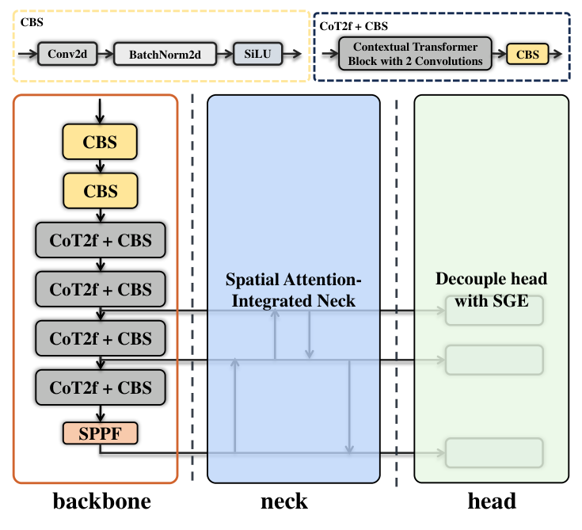
Fig. 1 : Structure of YO-CSA
图 1：YO-CSA 的结构。
图内术语：backbone＝主干网络；neck＝颈部网络；head＝检测头；CBS＝卷积、批归一化与 SiLU 激活；SANeck＝融合空间注意力的颈部网络。
III-A Brief Review of YOLOIII-A YOLO 简述
Since the introduction of YOLO [ 3 ] in 2016, the YOLO series has undergone annual iterations, consistently leading the field of object detection with its superior performance.
自 2016 年 YOLO [3] 提出以来，YOLO 系列逐年迭代，凭借优良性能持续引领目标检测领域。
As an end-to-end architecture, YOLO stands in contrast to models based on region proposals such as Faster-RCNN [ 25 ] , as it unifies a single network to perform detection tasks, streamlining the process.
作为端到端架构，YOLO 与 Faster-RCNN [25] 等基于候选区域的模型不同，它用一个统一网络完成检测任务，从而简化了流程。
YOLO architecture consists of the backbone, neck, and head, which are responsible for representative feature extraction, feature enhancement, and task-specific operations such as classification and regression, respectively.
YOLO 架构由主干网络、颈部网络和检测头组成，分别负责表征特征提取、特征增强，以及分类和回归等具体任务。
YOLOv5 achieves 50.5% mAP on the COCO, and was soon surpassed by YOLOv8, which attains 53.9% mAP on the same dataset.
YOLOv5 在 COCO 上取得 50.5% 的 mAP，随后被在同一数据集上达到 53.9% mAP 的 YOLOv8 超越。
III-B Overview of Detection NetworkIII-B 检测网络概述
Although YOLOv8 has achieved certain results in practical applications, there is still room for improvement in scenarios like badminton matches, where require both high real-time performance and precision.
尽管 YOLOv8 在实际应用中已取得一定成果，但在羽毛球比赛等同时要求高实时性与高精度的场景中，仍有改进空间。
We propose YO-CSA architecture, depicted in Fig. 1 .
我们提出的 YO-CSA 架构如图 1 所示。
Inspired by contextual transformer block (CoT) [ 26 ] and spatial group-wise enhance (SGE) [ 27 ] , we introduce contextual transformer block with 2 convolutions (CoT2f) and spatial attention-integrated neck (SANeck), which strengthen the network’s ability to extract and enhance features, particularly in terms of positional distribution, within the backbone and neck processes.
受上下文 Transformer 模块（CoT）[26] 和空间分组增强（SGE）[27] 的启发，我们引入包含两个卷积层的上下文 Transformer 模块（CoT2f），以及融合空间注意力的颈部网络（SANeck），增强主干和颈部网络的特征提取与增强能力，尤其是对位置分布信息的处理能力。
Furthermore, we optimize the detection head to facilitate more efficient learning of spatial distributions.
此外，我们还优化了检测头，使其能够更有效地学习空间分布。
Further details on the YO-CSA architecture is provided in the following sections.
下文将进一步介绍 YO-CSA 架构的细节。
III-C Contextual Transformer Block with 2 ConvolutionsIII-C 包含两个卷积层的上下文 Transformer 模块
It is crucial to design a deep neural network with robust representative extraction capability while mitigating computational overhead and minimizing information loss.
设计深度神经网络时，既要具备强大的表征提取能力，又要降低计算开销并尽量减少信息损失，这一点至关重要。
CoT2f is implemented in the backbone of YOLO aiming to enhancing the property to extract global context as well as alleviate representative information degradation.
我们在 YOLO 的主干网络中引入 CoT2f，旨在增强全局上下文提取能力，并减轻表征信息的退化。
The foundational launching point for our approach is to fully exploit the contextual self-attention mechanism and Bottleneck [ 11 ] recognized as an efficient architectural paradigm to boost network’s learning while reducing computational demands.
本方法的基本出发点，是充分利用上下文自注意力机制和 Bottleneck [11]；后者是一种高效的架构范式，能够在降低计算需求的同时增强网络学习能力。
As Fig. 2 illustrates, CoT2f comprises two convolution layers of different sizes and a CoT-Bottleneck.
如图 2 所示，CoT2f 由两个不同尺寸的卷积层和一个 CoT-Bottleneck 组成。
Initially, input X with the size of is fed into convolution layer 1, resulting in an output with the shape of , here denotes the number of channels in the convolution layer 1.
首先，将尺寸为 的输入 X 送入卷积层 1，得到形状为 的输出；其中， 表示卷积层 1 的通道数。
Subsequently, an inter-mediate product is obtained through a chunking operation.
随后，通过分块操作得到中间结果 。
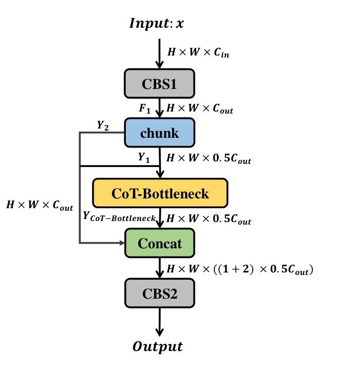
(a) CoT2f
（a）CoT2f。
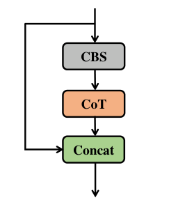
(b) CoT-Bottleneck
（b）CoT-Bottleneck。
Fig. 2 : Structure of CoT2f
图 2：CoT2f 的结构。
图内术语：Input＝输入；Output＝输出；chunk＝分块；Concat＝拼接；CoT-Bottleneck＝上下文 Transformer 瓶颈模块。
CoT-Bottleneck is capable of conducting finer-grained feature extraction on to yield , whereas is directly injected into the concatenation layer.
CoT-Bottleneck 对 进行更细粒度的特征提取，得到 ；而 则直接送入拼接层。
Analogous to a residual structure, and are concatenated, followed by processing through convolution layer 2 to facilitate the fusion of features.
类似于残差结构，将 与 拼接，再通过卷积层 2 处理，以促进特征融合。
CoT [ 26 ] , incorporated within CoT-BottleNeck, integrates contextual information mining with a self-attention mechanism into a cohesive architecture.
CoT-Bottleneck 中的 CoT [26] 将上下文信息挖掘与自注意力机制整合为统一架构。
Unlike traditional self-attention designs, it employs convolution kernel to capture contextual information, rather than relying on independent kernel, which decompose the correlations between paired key-value mappings.
与传统自注意力设计不同，它使用 卷积核捕捉上下文信息，而非依赖独立的 卷积核；后者会将成对键值映射之间的关联分解开来。
III-D Spatial Attention-Integrated NeckIII-D 融合空间注意力的颈部网络
Within the context of neural networks, the target object is composed of a sequence of sub-features, which implies that accurately identifying these sub-features enables the precise localization of the target object.
在神经网络的表征中，目标由一系列子特征组成，因此准确识别这些子特征有助于精确定位目标。
Therefore, we emphasize the importance of sub-features perception and extraction in the neck of YOLO, specifically within the feature fusion process of the dual pyramid structure.
因此，我们强调 YOLO 颈部网络中子特征感知与提取的重要性，尤其关注双金字塔结构中的特征融合过程。
To be more precise, a new dual pyramid structure is reconstructed based on SANeck, with the aim of enhancing network’s semantic extraction capability through self-attention mechanism.
具体而言，我们基于 SANeck 重构了一种新的双金字塔结构，旨在通过自注意力机制增强网络的语义提取能力。
For the purpose of minimizing computational overhead, SANeck appropriately references the lightweight structure SGE [ 27 ] , which draws inspiration from CapsNet [ 28 ] .
为尽量降低计算开销，SANeck 借鉴了受 CapsNet [28] 启发的轻量化结构 SGE [27]。
Inspired by the C2f structure in YOLOv8, we reconstruct neck by C2f-SGE to explicitly introduce self-attention in the neck.
受 YOLOv8 中 C2f 结构的启发，我们利用 C2f-SGE 重构颈部网络，从而显式引入自注意力。
Fig. 3 illustrates detail of SANeck.
图 3 展示了 SANeck 的细节。
Firstly, the output from the previous layer is fed to convolution layer 1.
首先，将上一层的输出送入卷积层 1。
Then, the convolved output is chunked into two slices, one slice, , is compressed by n SGE-2f modules, while the other slice, , is directly transported to the concatenation operation.
随后，将卷积输出分成两部分：其中一部分 由 n 个 SGE-2f 模块进行压缩，另一部分 则直接送入拼接操作。
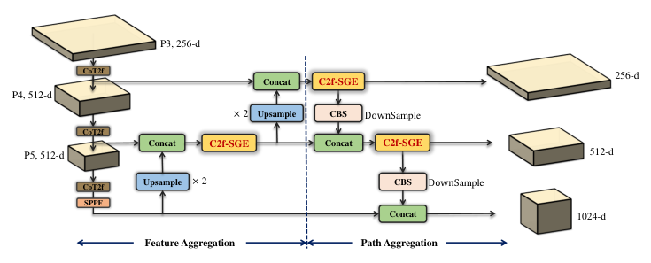
Fig. 3 : Spatial Attention-Integrated Neck
图 3：融合空间注意力的颈部网络。
图内术语：Upsample＝上采样；Concat＝拼接；C2f-SGE＝融合空间分组增强的 C2f 模块。
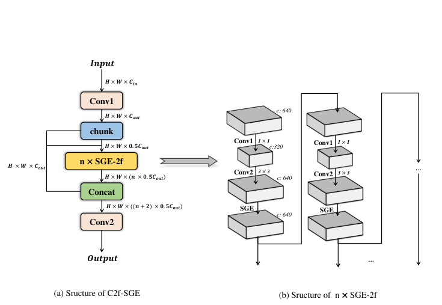
Fig. 4 : SGE with 2 Convolution
图 4：包含两个卷积层的 SGE。
III-E Decouple head with SGEIII-E 融合 SGE 的解耦检测头
According to the paradigm of object detection, the backbone extracts representative features, while the downstream layers handle tasks, such as classification and bounding box regression.
按照目标检测的常见范式，主干网络提取表征特征，下游网络层则处理分类与边界框回归等任务。
Thus, greater attention should be given to spatial distribution in these downstream layers.
因此，这些下游网络层应更加关注空间分布。
Contrasting with the traditional detection head, the decoupled head no longer shares the parameters between classification and regression.
与传统检测头相比，解耦检测头不再在分类与回归之间共享参数。
Instead, it utilities two parallel branches to decouple the two tasks, allowing the network to learn the spatial distribution for each task independently.
它通过两个并行分支将这两项任务解耦，使网络能够分别学习各任务所需的空间分布。
As mentioned, SGE [ 27 ] highlights the similarity between local and global features, helping the network learn spatial distributions more effectively.
如前所述，SGE [27] 强调局部特征与全局特征之间的相似性，有助于网络更有效地学习空间分布。
Therefore, the decoupled head integrated with SGE outperforms the traditional version.
因此，融合 SGE 的解耦检测头优于传统版本。
As shown in Fig. 5 , after processed by SGE, the single branch is split into two parallel branches, each containing two 3x3 convolutions, which perform classification and regression, respectively.
如图 5 所示，经 SGE 处理后，单个分支被拆分为两个并行分支，每个分支包含两个 3×3 卷积，分别执行分类与回归。
The output of classification and regression are [H, W, nc] (where nc denotes the number of classes) and [H, W, 64] (with 16 channels for the DFL module and 4 essential parameters for the bounding box), respectively.
分类输出和回归输出的形状分别为 [H, W, nc]（其中 nc 为类别数）和 [H, W, 64]（DFL 模块使用 16 个通道，边界框具有 4 个基本参数）。
IV YO-CSA-T System DesignIV YO-CSA-T 系统设计
Our total system can be decomposed into two main components: hardware infrastructure of stereo vision and software design.
整个系统可分为两个主要部分：立体视觉硬件平台与软件设计。
The software design integrates 2D object detection, advanced 3D tracking methodologies and the compensation module.
软件部分集成二维目标检测、先进的三维跟踪方法以及补偿模块。
IV-A Hardware Infrastructure of Stereo VisionIV-A 立体视觉硬件平台
To obtain 3D coordinates, cameras with 3D reconstruction capabilities are required.
要获得三维坐标，需要采用具备三维重建能力的相机系统。
However, stereo cameras available on the market, like ZED, often struggle to achieve frame rates above 90 fps, which compromises the reliability of trajectory extraction for high-speed shuttlecocks.
然而，市售立体相机（例如 ZED）往往难以达到 90 fps 以上的帧率，影响了高速羽毛球轨迹提取的可靠性。
This is particularly problematic when capturing the distinct trajectory of a serve, which involves an initial descent followed by a parabolic ascent and then another descent.
这在捕捉发球的特殊轨迹时尤为突出：该轨迹先下降，随后呈抛物线式上升，再次下降。
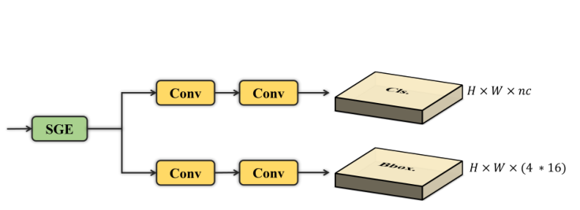
Fig. 5 : Decouple head with SGE
图 5：融合 SGE 的解耦检测头。
图内术语：Class＝类别；BBox＝边界框；Conv＝卷积；DFL＝分布焦点损失相关模块。
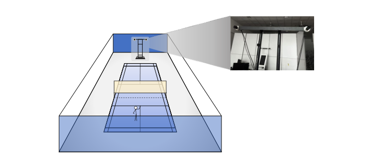
Fig. 6 : Schematic Diagram of a Stereo Vision Setup
图 6：立体视觉装置示意图。
To address this issue, we employ two monocular cameras (model A7200CU130, manufactured by Huairui Technology) to construct a stereo vision system.
为解决这一问题，我们采用两台单目相机（型号 A7200CU130，由 Huairui Technology 制造）搭建立体视觉系统。
This setup enables the creation of a high-precision binocular system capable of covering the entire badminton court while maintaining accuracy.
该配置能够构建高精度双目系统，在保持精度的同时覆盖整个羽毛球场。
Fig. 6 illustrates the placement of the cameras and their supporting structures during implementation.
图 6 展示了实际部署时相机及其支撑结构的布置。
Specifically, the stereo cameras are positioned at the rear of the robot’s court to clearly capture the trajectory of incoming shuttlecocks.
具体而言，双目相机位于机器人所在半场的后方，以清晰捕捉来球轨迹。
The baseline between cameras is set at 0.8 m, and the cameras are mounted at a height of approximately 1.8 m to simulate the perspective of an adult male.
两台相机之间的基线设为 0.8 m，安装高度约为 1.8 m，以模拟成年男性的观察视角。
IV-B Detection ModuleIV-B 检测模块
The detection network YO-CSA, core of detection module, explicitly incorporates con-textual and spatial attention mechanisms and successfully achieves performance that surpasses YOLOv8 and YOLO11.
作为检测模块的核心，YO-CSA 检测网络显式融合上下文与空间注意力机制，取得了优于 YOLOv8 和 YOLO11 的性能。
The specific structure of our detection network is presented in detail in Section III.
检测网络的具体结构已在第 III 节中详细介绍。
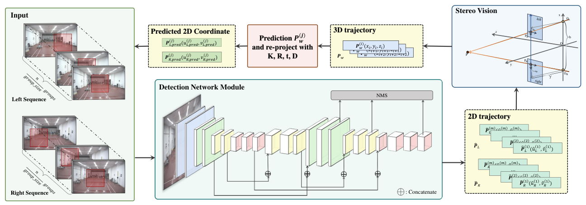
(a) The process of extracting 3D trajectories from the left and right imaging planes.
（a）从左右成像平面提取三维轨迹的过程。
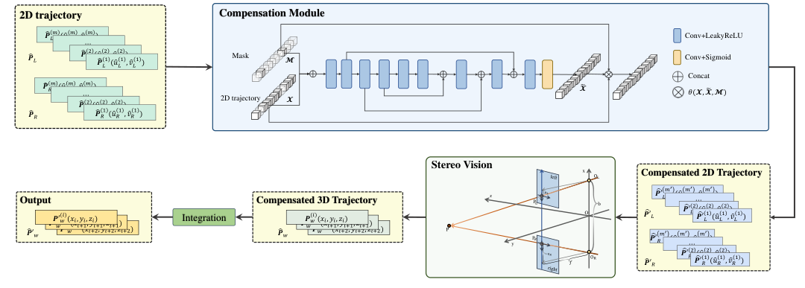
(b) Compensation process
（b）补偿过程。
Fig. 7 : System workflow: (a) The process of extracting 3D trajectories from the left and right imaging planes, (b) Compensation process.
图 7：系统工作流程。（a）从左右成像平面提取三维轨迹的过程；（b）补偿过程。
图内术语：Input＝输入；Predicted 2D Coordinates＝预测二维坐标；Detection Network Module＝检测网络模块；Stereo Vision＝立体视觉；Compensation Module＝补偿模块；Compensated 3D Trajectory＝补偿后的三维轨迹；Mask＝掩码。
IV-C Comprehensive Tracking WorkflowIV-C 完整跟踪流程
Our pipeline not only detects the shuttlecock in the current frame, but also predicts its future trajectory based on historical information, thereby incorporating reasonable constraints to enhances the plausibility of the detection range.
本流程不仅检测当前帧中的羽毛球，还依据历史信息预测其未来轨迹，从而引入合理约束，使检测范围的设定更加合理。
Throughout the process, we implement constraints to ensure trajectory consistency, such as region of interest (ROI) and threshold settings , , evaluating the plausibility of coordinates.
在整个过程中，我们通过感兴趣区域（ROI）以及用于判断坐标合理性的阈值 、、 等约束，保证轨迹的一致性。
Fig. 7 displays our entire tracking pipeline based on 2 image sequences, denoted as , , captured by the left and right monocular cameras respectively, where each image in the sequences corresponds to a specific timestamp, ensuring temporal alignment between the left and right camera frames.
图 7 展示了完整的跟踪流程，其输入为左右单目相机分别采集的两个图像序列 、；序列中的每幅图像均对应一个时间戳，从而保证左右相机帧在时间上对齐。
In accordance with the rules of the game, the shuttlecock’s initial position is typically located at the center of the frame.
根据比赛规则，羽毛球的初始位置通常位于画面中心。
So we center a ROI area on and , which not only focuses the detection process on a smaller region but also alleviates the computational burden on the detection network.
因此，我们分别在 和 的中心设置一个 的 ROI 区域；这既将检测集中到较小区域，也减轻了检测网络的计算负担。
The detection network YO-CSA performs parallel detection tasks on the paired images , .
YO-CSA 检测网络对成对图像 、 并行执行检测任务。
A detection is considered valid, and tracking is initiated only when both and successfully detect the shuttlecock at and , and their displacement (especially along the vertical axis) is within the predefined threshold .
只有当 与 都成功检测到羽毛球，其位置分别为 和 ，且二者的位置差异（尤其是竖直方向）处于预设阈值 以内时，才将本次检测视为有效并启动跟踪。
Simultaneously, the detected 2D positions are fed into the stereo matching module to obtain the corresponding 3D coordinates.
同时，将检测到的二维位置 输入立体匹配模块，获得对应的三维坐标。
In 3D space, we perform timestamp-based fitting along all three axes on the trajectory sequence, making a prior prediction of the shuttlecock’s trajectory.
在三维空间中，我们利用时间戳对轨迹序列的三个坐标轴分别进行拟合，得到羽毛球轨迹的先验预测 。
Every 10 frames, this 3D prior prediction is projected onto the left and right image planes as , , providing feedback to adjust the ROI displacement error.
每隔 10 帧，将这一三维先验预测分别投影到左右图像平面，得到 、，通过反馈修正 ROI 的位移误差。
To ensure trajectory consistency, we also perform a plausibility check on the predicted future coordinates based on the threshold .
为保证轨迹一致性，我们还依据阈值 对预测的未来坐标进行合理性检查。
IV-D Compensation ModuleIV-D 补偿模块
Inspired by TrackNetv3 [ 29 ] , we add a compensation module as an auxiliary branch.
受 TrackNetv3 [29] 启发，我们增加了一个作为辅助分支的补偿模块。
We use the 2D trajectory , obtained from the detection module and a corresponding trajectory mask as input, employing a compensation network for interpolation.
该模块以检测模块输出的二维轨迹 、 及相应的轨迹掩码为输入，利用补偿网络进行插值。
This network compensates for missing frames that were either missed during detection or discarded due to violations of spatiotemporal constraints.
该网络用于补齐检测漏失的帧，以及因不满足时空约束而被丢弃的帧。
The compensation network is a U-shaped network [ 18 ] based on 1D convolution operations, leveraging an encoder-decoder architecture to extract and integrate both shallow spatial information and deep semantic features from the 2D trajectory.
补偿网络采用基于一维卷积运算的 U 形网络 [18]，利用编码器—解码器架构提取并融合二维轨迹中的浅层空间信息和深层语义特征。
We reintroduce the compensated trajectory , into the stereo vision module to obtain the complete 3D trajectory .
我们将补偿后的轨迹 、 重新输入立体视觉模块，得到完整的三维轨迹 。
Based on spline interpolation, we generated another complete trajectory from the trajectory .
同时，基于样条插值，从轨迹 生成另一条完整轨迹 。
Subsequently, , the compensated trajectory and mask are integrated through function to obtain fully completed trajectory as ( 1 ).
随后，通过函数 将 、补偿轨迹 以及掩码 融合，得到完全补齐的轨迹 ，如式（1）所示。
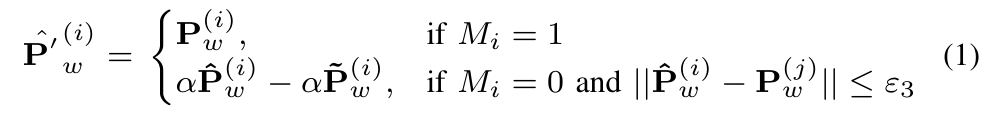
V Experiments and ResultsV 实验与结果
V-A DatasetV-A 数据集
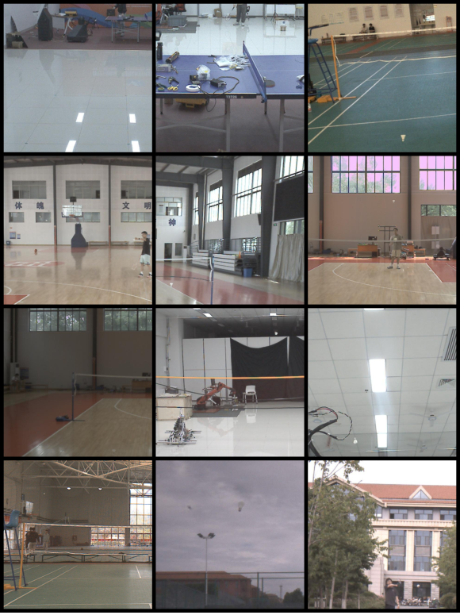
(a) Different Scenes from the Dataset
（a）数据集中的不同场景。
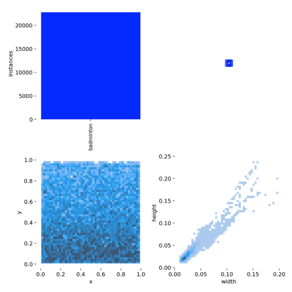
(b) Shuttlecock Distribution in the Training Set
（b）训练集中羽毛球的分布。
Fig. 8 : Representative scenes in our dataset.
图 8：数据集中的代表性场景。
图内术语：instances＝实例数；shuttlecock＝羽毛球；width/height＝宽度/高度。
Based on the custom-built 3D vision system, we collect badminton rally data from 10 distinct venues or environments, encompassing various angles and natural lighting conditions, totaling 32,539 images.
利用自建三维视觉系统，我们从 10 个不同场馆或环境中采集了羽毛球对打数据，涵盖不同视角和自然光照条件，共计 32,539 幅图像。
Random pixel regions were sampled from the original images, with the condition that the shuttlecock must be present within the cropped area.
我们从原始图像中随机裁取 像素区域，并要求裁剪区域内必须包含羽毛球。
Specifically, the shuttlecock is not necessarily centered within the cropping region but is randomly distributed across the area.
具体而言，羽毛球不一定处于裁剪区域的中心，而是随机分布在 区域内。
Fig. 8(a) illustrates a subset of our dataset.
图 8（a）展示了数据集中的部分样本。
During actual training, to enhance the generalization and robustness of the network, we also applies data augmentation techniques, including adjustments to the HSV hue, saturation, and value, as well as geometric transformations such as rotation, translation, scaling, and flipping.
实际训练时，为增强网络的泛化能力与鲁棒性，我们还采用了数据增强技术，包括调整 HSV 色彩空间中的色相、饱和度和明度，以及旋转、平移、缩放、翻转等几何变换。
The training set label description for our dataset is shown in Fig. 8(b) .
数据集训练标签的统计情况如图 8（b）所示。
As observed from the figure, the shape of the shuttlecock in the dataset predominantly appears as a nearly square-like rectangle, which aligns with the fact that the standard dimensions of a shuttlecock are 68-78mm in height and 58-68mm in diameter.
从图中可以看出，数据集中羽毛球的外形主要呈接近正方形的矩形，这与羽毛球的标准高度为 68–78 mm、直径为 58–68 mm 相符。
V-B Detection ExperimentsV-B 检测实验
Aside from enhancing the data augmentation techniques, we retain the original parameters of YOLOv8 and train the model for 300 epochs on our custom dataset.
除增强数据增强策略外，我们保留了 YOLOv8 的原始参数设置，并在自建数据集上训练模型 300 个轮次。
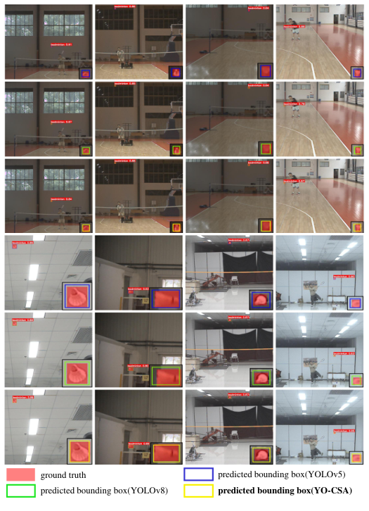
Fig. 9 : Detection results including labels and confidence scores.
图 9：包含标签和置信度的检测结果。
Each image’s detected bounding boxes are magnified and displayed in the bottom-right corner with black borders.
每幅图像中的检测框均被放大，并以黑色边框显示在该图像的右下角。
TABLE I : COMPARISON EXPERIMENTS WITH OTHER MAINSTREAM MODELS
表 I：与其他主流模型的对比实验。
| Model模型 | mAP@0.5(%)mAP@0.5（%） | mAP@0.75(%)mAP@0.75（%） | mAP@0.5:0.95(%)mAP@0.5:0.95（%） | Recall(%)召回率（%） | FPS帧/秒 |
| Faster R-CNNFaster R-CNN | 98.30 | 78.29 | 58.52 | 87.10 | 229.6 |
| RetinaNetRetinaNet | 93.87 | 72.76 | 59.57 | 74.09 | 222.4 |
| YOLOv5sYOLOv5s | 98.49 | 76.06 | 65.59 | 95.28 | 285.7 |
| YOLOv8sYOLOv8s | 99.38 | 82.67 | 71.50 | 98.62 | 250.0 |
| YOLO11sYOLO11s | 99.37 | 86.94 | 71.56 | 98.25 | 238.1 |
| YO-CSA(Ours)YO-CSA（本文） | 99.43 | 90.43 | 74.00 | 99.02 | 243.9 |
Our detection network achieves 74.00% mAP@0.5:0.95 on our dataset, while YOLOv5s achieving 65.59% and YOLOv8s achieving 71.50%.
在本数据集上，我们的检测网络取得 74.00% 的 mAP@0.5:0.95，而 YOLOv5s 为 65.59%，YOLOv8s 为 71.50%。
Table I presents the detection results of the YO-CSA algorithm alongside other mainstream detection models.
表 I 列出了 YO-CSA 算法与其他主流检测模型的检测结果。
Fig. 9 shows the visual results of the YO-CSA on our dataset, demonstrating a high level of accuracy.
图 9 展示了 YO-CSA 在本数据集上的可视化结果，表明其具有较高的检测精度。
The accuracy of boxes directly influences the precision of trajectory prediction.
边界框的准确程度会直接影响轨迹预测的精度。
Therefore, in addition to focusing on precision, we place particular emphasis on the mAP metric.
因此，除关注精确率外，我们还特别重视 mAP 指标。
Considering that mAP@0.5 does not fully capture the improvements, we have also highlighted mAP@0.75.
考虑到 mAP@0.5 不能充分体现改进效果，我们进一步强调 mAP@0.75。
Our detection network achieves 90.43% mAP@0.75, outperforming YOLOv8s by 7.76% and YOLO11s by 3.49%.
我们的检测网络取得 90.43% 的 mAP@0.75，分别比 YOLOv8s 和 YOLO11s 高出 7.76 和 3.49 个百分点。
To validate the effectiveness of our optimizations, we conducts a series of ablation experiments, with results presented in Table II .
为验证各项优化的有效性，我们开展了一系列消融实验，结果见表 II。
The data demonstrate that the improved YO-CSA achieves the best performance while even reducing the network’s GFLOPs.
数据显示，改进后的 YO-CSA 在降低网络 GFLOPs 的同时，取得了最佳性能。
V-C Tracking ExperimentsV-C 跟踪实验
In order to assess the effectiveness of our approach, we collect 12 video clips of serve and hit actions, each captured at 160fps, using our custom-built vision system.
为评估方法的有效性，我们利用自建视觉系统，以 160 fps 采集了 12 段发球与击球动作视频。
Although the YO-CSA design already incorporates a lightweight structure, we aim to further optimize the detection speed to meet the demands of high-level competitions.
尽管 YO-CSA 的设计已经采用轻量化结构，我们仍希望进一步优化检测速度，以满足高水平比赛的需求。
Therefore, we accelerate the model using ONNX.
因此，我们使用 ONNX 对模型进行加速。
Table III presents the detection performance of the accelerated YO-CSA.
表 III 列出了加速后的 YO-CSA 检测性能。
Despite maintaining a detection accuracy of 73.94% mAP, we are able to improve the detection speed to 5.82ms per frame, achieving a speedup of 12.74%.
在保持 73.94% mAP 检测精度的同时，我们将检测时间缩短至每帧 5.82 ms，实现了 12.74% 的加速。
In the whole tracking process, in addition to defining ROI to alleviate the detection module, we further impose constraints in the 3D visual space on the 2D detections.
在整个跟踪过程中，除通过设置 ROI 减轻检测模块负担外，我们还利用三维视觉空间中的约束来限制二维检测结果。
We compare the performance of 4 strategies in Table IV : (a) performing object detection directly on the 2D image sequences, obtaining paired left and right view coordinate sequences, and then conducting 3D vision matching; (b) restricting fixed 640x640 ROI regions on the left and right views; (c) based on (b), utilizing historical trajectory information to predict the next 3D position in 3D space and projecting it onto the left and right views to update the ROI; (d) based on (c), adopting compensation module to optimize the trajectory.
表 IV 比较了四种策略：（a）直接对二维图像序列执行目标检测，获得成对的左右视图坐标序列，再进行三维视觉匹配；（b）在左右视图中限定固定的 640×640 ROI 区域；（c）在（b）的基础上，利用历史轨迹信息在三维空间中预测下一位置，并投影到左右视图以更新 ROI；（d）在（c）的基础上，采用补偿模块优化轨迹。
TABLE II : ABLATION EXPERIMENTS
表 II：消融实验。
| Model模型 | mAP@0.5(%)mAP@0.5（%） | mAP@0.75(%)mAP@0.75（%） | mAP@0.5:0.95(%)mAP@0.5:0.95（%） | Recall(%)召回率（%） | GFLOPs十亿次浮点运算 |
| YOLOv8sYOLOv8s | 99.38 | 82.67 | 71.50 | 98.62 | 23.6 |
| YOLOv8+abYOLOv8+ab | 99.40 | 89.21 | 73.32 | 98.91 | 20.9 |
| YOLOv8+acYOLOv8+ac | 99.40 | 89.37 | 73.56 | 98.40 | 20.9 |
| YOLOv8+bcYOLOv8+bc | 99.42 | 88.37 | 73.54 | 98.97 | 23.6 |
| YOLOv8+abc(Ours)YOLOv8+abc（本文） | 99.43 | 90.43 | 74.00 | 99.02 | 20.9 |
TABLE III : LIGHTWEIGHT PERFORMANCE COMPARISON EXPERIMENTS
表 III：轻量化性能对比实验。
| Model模型 | mAP@0.5(%)mAP@0.5（%） | mAP@0.75(%)mAP@0.75（%） | mAP@0.5:0.95(%)mAP@0.5:0.95（%） | Recall(%)召回率（%） | Inference Time(ms)推理时间（ms） |
| YOLOv8sYOLOv8s | 99.38 | 82.67 | 71.50 | 98.62 | 6.84 |
| YOLOv8s(accelerated)YOLOv8s（加速后） | 99.34 | 82.65 | 71.27 | 98.55 | 5.93 |
| YOLO11sYOLO11s | 99.37 | 86.94 | 71.56 | 98.25 | 7.03 |
| YOLO11s(accelerated)YOLO11s（加速后） | 99.36 | 86.45 | 71.23 | 98.17 | 6.66 |
| YO-CSA(Ours)YO-CSA（本文） | 99.43 | 90.43 | 74.00 | 99.02 | 6.67 |
| YO-CSA(Ours, accelerated)YO-CSA（本文，加速后） | 99.42 | 90.41 | 73.94 | 99.01 | 5.82 |
Since obtaining the ground truth of 3D trajectories is highly costly, we evaluate 4 strategies by computing the smoothness of the trajectory based on velocity and acceleration, namely velocity smoothness ( ) ans acceleration smoothness ( ), as well as the average centroid shift of the trajectory ( ).
由于获取三维轨迹真值的成本很高，我们通过计算基于速度和加速度的轨迹平滑度，即速度平滑度（）和加速度平滑度（），以及轨迹的平均质心偏移（），来评估四种策略。
For the 3D trajectory :
对于三维轨迹 ：
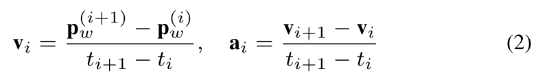
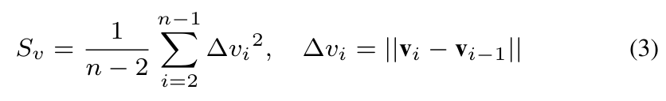
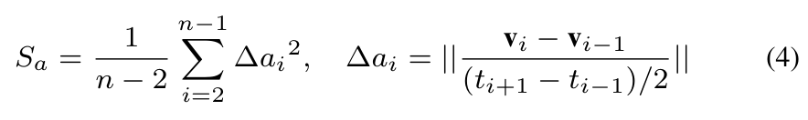
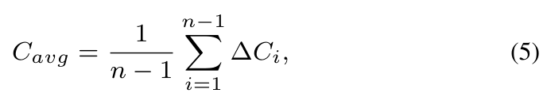
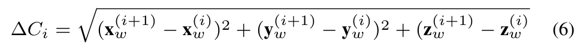
We assume that smaller smoothness and centroid shifts indicate trajectories that are closer to reality.
我们假定，平滑度指标和质心偏移越小，轨迹就越接近真实情况。
As displayed in Table IV , Strategy D performs the best.
如表 IV 所示，策略 D 的表现最好。
Fig. 10 illustrates the results of four strategies .
图 10 展示了四种策略的结果。
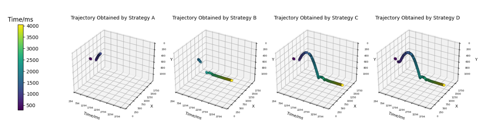
(a) Comparison of 2D trajectories on the left imaging plane
（a）左成像平面上的二维轨迹对比。
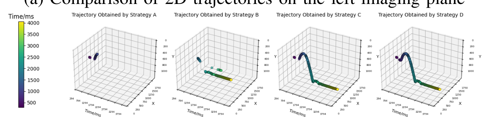
(b) Comparison of 2D trajectories on the right imaging plane
（b）右成像平面上的二维轨迹对比。
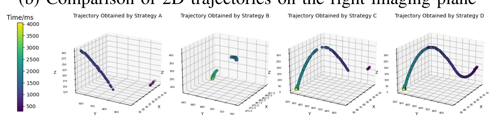
(c) Comparison of 3D trajectories
（c）三维轨迹对比。
Fig. 10 : Comparison of trajectories extracted using four different strategies.
图 10：采用四种不同策略提取的轨迹对比。
TABLE IV : SYSTEM PERFORMANCE WITH DIFFERENT STRATEGIES
表 IV：不同策略下的系统性能。
| Strategy策略 | Acceleration(%)Acceleration（%）〔原文列名，见译者注〕 | Velocity Smoothness速度平滑度指标 | Acceleration Smoothness加速度平滑度指标 | Average Centroid Shift(cm)平均质心偏移（cm） | FPS帧/秒 |
| Strategy A策略 A | 27.86 | 100 | 1e7 | 19.10 | 85.7 |
| Strategy B策略 B | 30.38 | 6.91 | 1.13e6 | 5.76 | 90.9 |
| Strategy C策略 C | 81.28 | 3.92 | 2.77e5 | 2.35 | 133.3 |
| Strategy D策略 D | 100.00 | 2.31 | 2.25e5 | 2.35 | - |
VI CONCLUSION AND FUTURE WORKVI 结论与未来工作
We construct YO-CSA, a network built upon YOLOv8s, leveraging spatial and contextual attention mechanisms to achieve a substantial improvement in detection performance.
我们构建了基于 YOLOv8s 的 YO-CSA 网络，利用空间与上下文注意力机制，显著提升了检测性能。
Additionally, we introduce a multi-dimensional spatiotemporal constraint strategy and design a real-time system for the precise extraction of the shuttlecock’s 3D trajectory based on YO-CSA.
此外，我们提出了多维时空约束策略，并基于 YO-CSA 设计了实时系统，以精确提取羽毛球三维轨迹。
Experimental results demonstrate that our system can extract the shuttlecock’s trajectory with high accuracy and in real-time.
实验结果表明，本系统能够实时、高精度地提取羽毛球轨迹。
Building upon the current foundation, we intend to further investigate the practical implementation of human-machine competitions in future work.
在现有工作的基础上，我们计划在未来进一步研究人机对抗的实际实现。
References参考文献（保留原文）
- [1] R. Girshick, J. Donahue, T. Darrell, and J. Malik, “Rich feature hierarchies for accurate object detection and semantic segmentation,” in Proceedings of the IEEE conference on computer vision and pattern recognition, pp. 580–587, 2014.
- [2] M. Everingham, S. A. Eslami, L. Van Gool, C. K. Williams, J. Winn, and A. Zisserman, “The pascal visual object classes challenge: A retrospective,” International journal of computer vision, vol. 111, pp. 98–136, 2015.
- [3] J. Redmon, “You only look once: Unified, real-time object detection,” in Proceedings of the IEEE conference on computer vision and pattern recognition, 2016.
- [4] K. Duan, S. Bai, L. Xie, H. Qi, Q. Huang, and Q. Tian, “Centernet: Keypoint triplets for object detection,” in Proceedings of the IEEE/CVF international conference on computer vision, pp. 6569–6578, 2019.
- [5] M. Tan and Q. Le, “Efficientnet: Rethinking model scaling for convolutional neural networks,” in International conference on machine learning, pp. 6105–6114, PMLR, 2019.
- [6] A. Vaswani, “Attention is all you need,” Advances in Neural Information Processing Systems, 2017.
- [7] X. Zhu, W. Su, L. Lu, B. Li, X. Wang, and J. Dai, “Deformable detr: Deformable transformers for end-to-end object detection,” arXiv preprint arXiv:2010.04159, 2020.
- [8] Z. Liu, Y. Lin, Y. Cao, H. Hu, Y. Wei, Z. Zhang, S. Lin, and B. Guo, “Swin transformer: Hierarchical vision transformer using shifted windows,” in Proceedings of the IEEE/CVF international conference on computer vision, pp. 10012–10022, 2021.
- [9] A. Dosovitskiy, “An image is worth 16x16 words: Transformers for image recognition at scale,” arXiv preprint arXiv:2010.11929, 2020.
- [10] J. Deng, W. Dong, R. Socher, L.-J. Li, K. Li, and L. Fei-Fei, “Imagenet: A large-scale hierarchical image database,” in 2009 IEEE conference on computer vision and pattern recognition, pp. 248–255, Ieee, 2009.
- [11] K. He, X. Zhang, S. Ren, and J. Sun, “Deep residual learning for image recognition,” in Proceedings of the IEEE conference on computer vision and pattern recognition, pp. 770–778, 2016.
- [12] S. Dai, Y. Zhu, X. Jiang, F. Yu, J. Lin, and D. Yang, “Td-net: Trans-deformer network for automatic pancreas segmentation,” Neurocomputing, vol. 517, pp. 279–293, 2023.
- [13] J. Yang, J. Tu, X. Zhang, S. Yu, and X. Zheng, “Tse deeplab: An efficient visual transformer for medical image segmentation,” Biomedical Signal Processing and Control, vol. 80, p. 104376, 2023.
- [14] S. Wang, H. Wang, S. She, Y. Zhang, Q. Qiu, and Z. Xiao, “Swin-t-nfc crfs: An encoder–decoder neural model for high-precision uav positioning via point cloud super resolution and image semantic segmentation,” Computer Communications, vol. 197, pp. 52–60, 2023.
- [15] R. Voeikov, N. Falaleev, and R. Baikulov, “Ttnet: Real-time temporal and spatial video analysis of table tennis,” in Proceedings of the IEEE/CVF Conference on Computer Vision and Pattern Recognition Workshops, pp. 884–885, 2020.
- [16] N.-E. Sun, Y.-C. Lin, S.-P. Chuang, T.-H. Hsu, D.-R. Yu, H.-Y. Chung, and T.-U. İk, “Tracknetv2: Efficient shuttlecock tracking network,” in 2020 International Conference on Pervasive Artificial Intelligence (ICPAI), pp. 86–91, IEEE, 2020.
- [17] S. Tarashima, M. A. Haq, Y. Wang, and N. Tagawa, “Widely applicable strong baseline for sports ball detection and tracking,” arXiv preprint arXiv:2311.05237, 2023.
- [18] O. Ronneberger, P. Fischer, and T. Brox, “U-net: Convolutional networks for biomedical image segmentation,” in Medical image computing and computer-assisted intervention–MICCAI 2015: 18th international conference, Munich, Germany, October 5-9, 2015, proceedings, part III 18, pp. 234–241, Springer, 2015.
- [19] J. Wang, K. Sun, T. Cheng, B. Jiang, C. Deng, Y. Zhao, D. Liu, Y. Mu, M. Tan, X. Wang, et al., “Deep high-resolution representation learning for visual recognition,” IEEE transactions on pattern analysis and machine intelligence, vol. 43, no. 10, pp. 3349–3364, 2020.
- [20] D. Wu and A. Xiao, “Deep learning-based algorithm for recognizing tennis balls,” Applied Sciences, vol. 12, no. 23, p. 12116, 2022.
- [21] T. Zhang, X. Zhang, Y. Yang, Z. Wang, and G. Wang, “Efficient golf ball detection and tracking based on convolutional neural networks and kalman filter,” arXiv preprint arXiv:2012.09393, 2020.
- [22] J. Redmon, “Yolov3: An incremental improvement,” arXiv preprint arXiv:1804.02767, 2018.
- [23] G. Bishop, G. Welch, et al., “An introduction to the kalman filter,” Proc of SIGGRAPH, Course, vol. 8, no. 27599-23175, p. 41, 2001.
- [24] W. Li, X. Liu, K. An, C. Qin, and Y. Cheng, “Table tennis track detection based on temporal feature multiplexing network,” Sensors, vol. 23, no. 3, p. 1726, 2023.
- [25] S. Ren, K. He, R. Girshick, and J. Sun, “Faster r-cnn: Towards real-time object detection with region proposal networks,” IEEE transactions on pattern analysis and machine intelligence, vol. 39, no. 6, pp. 1137–1149, 2016.
- [26] Y. Li, T. Yao, Y. Pan, and T. Mei, “Contextual transformer networks for visual recognition,” IEEE Transactions on Pattern Analysis and Machine Intelligence, vol. 45, no. 2, pp. 1489–1500, 2022.
- [27] X. Li, X. Hu, and J. Yang, “Spatial group-wise enhance: Improving semantic feature learning in convolutional networks,” arXiv preprint arXiv:1905.09646, 2019.
- [28] S. Sabour, N. Frosst, and G. E. Hinton, “Dynamic routing between capsules,” Advances in neural information processing systems, vol. 30, 2017.
- [29] Y.-J. Chen and Y.-S. Wang, “Tracknetv3: Enhancing shuttlecock tracking with augmentations and trajectory rectification,” in Proceedings of the 5th ACM International Conference on Multimedia in Asia, pp. 1–7, 2023.